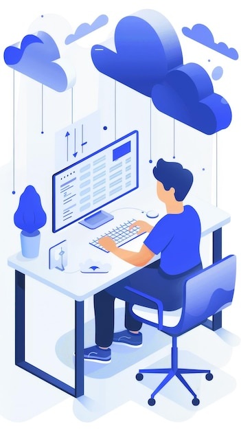
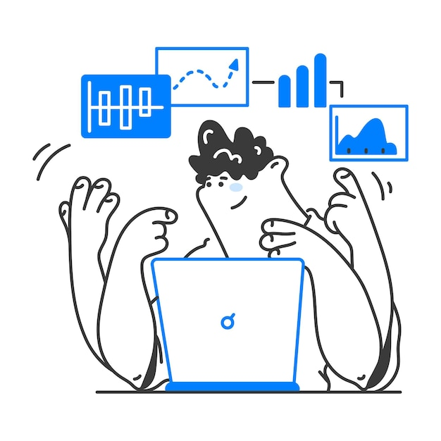

Expertise Across Legal Markets
With deep knowledge of the legal industry, Veritas Partners offers unparalleled expertise in recruiting and consulting, ensuring that we meet the unique needs of each client.
With deep knowledge of the legal industry, Veritas Partners offers unparalleled expertise in recruiting and consulting, ensuring that we meet the unique needs of each client.
Our personalized approach ensures that every search is customized to your specific requirements, with a strong commitment to confidentiality and discretion.
We leverage a vast network of top-tier legal professionals and corporate clients, providing access to opportunities and candidates that are often not available through traditional channels.
Our track record of successful placements and satisfied clients speaks for our ability to deliver results that align with your strategic goals.

Built for meaningful progress
We bring senior thinking, commercial discipline, and hands-on delivery into one focused partnership. Every recommendation has a clear purpose: helping your organization move with confidence.
Turn complex market and operating data into a clear set of priorities.
Give leaders and teams one practical roadmap for decisions and delivery.
Translate strategy into accountable actions, measurable gains, and repeatable growth.
Inside the work
FAQ
Clear thinking starts with clear expectations. Here are the practical details leaders ask before beginning a Busiq engagement.
Ideas for the next move
Managing Partner
Strategy Director
Operations Partner
Growth Partner
Built together
Bring your hardest business challenge. We will bring the structure, senior attention, and practical momentum.
We turn ambition into a focused portfolio of strategic choices and measures.
Clarify where to play, how to win, and what to fund.
Ground growth choices in customer and market evidence.

Testimonial
“Working with Busiq was a game-changer for our business. Their strategic insights helped us navigate change and unlock new opportunities.”Robert LongCOO · Frontier Group
Start the conversation
Our advisory team will follow up within one business day.
Testimonials
Busiq transformed our entire operating model. Their team is strategic, creative, and relentlessly focused on outcomes.
We left every working session with sharper choices, named owners, and more confidence in the path ahead.
The strategy was ambitious, but the delivery rhythm made it practical. Our organization moved together from week one.
How we work
Four connected disciplines turn an ambitious idea into a distinctive, market-ready business experience.
A brand system built to be remembered, trusted, and used consistently.
Connected ecosystem
Our partner network supports more than 40 certified connectors, so teams keep the systems they trust while gaining one clear operating view.
Delivery process
Six practical stages keep discovery, decisions, creation, and adoption connected from start to finish.
We combine interviews, market evidence, and operating data into a shared fact base.
Advisory portfolio
Selected capability: Portfolio planning
Connected capabilities
01 · Select priorities
Clarify which businesses, markets, and initiatives deserve resources now—and which options should remain open.
02 · Prioritize
Track choices from signal to action with an evidence trail leaders and delivery teams can understand.
03 · Execute
Reduce repetitive coordination and give teams more time for judgment, customer work, and improvement.
04 · Adapt
Connect real performance with forward-looking scenarios so leaders can respond before variance becomes drift.
One leadership team. Six operating units. A single twelve-month plan that restored confidence, accelerated delivery, and returned the business to durable growth.
About us
Cross-sector pattern recognition reveals hidden constraints and transferable sources of value.
One integrated plan aligns diligence, leadership, customers, and first-100-day execution.
Specialist expertise can be activated quickly wherever the transaction needs additional depth.
Clear value cases, accountable owners, and measurable milestones protect momentum after close.
Performance claritySee the few signals shaping growth.
Digital transformationConnect technology to real behavior.
Operational resilienceBuild systems that learn under pressure.
Growth architectureScale choices, capability, and ownership.
Committed to outcomes
Our work combines commercial judgment, multidisciplinary craft, and hands-on delivery to turn difficult choices into lasting capability.
Growth operating system
Bring priorities, evidence, ownership, and delivery signals into one view built for leaders and teams.
Executive workspace
Connected signals make exceptions visible before momentum drifts.
100+ brand partners join these
Our mission is to support lasting client success by applying economic insight, expert advisory, forward-thinking management, and a fresh, results-driven approach to business consulting.
Make ownership, obligations, and decisions visible.
Bring the right voices into every critical choice.
Build on evidence rather than assumptions.
Our senior team turns clear marketing and operating evidence into practical momentum.
16+Years of experience
800+Projects developed
350+Clients worldwide
100%Client satisfaction
We connect strategy to execution and stay close until the work creates value.
Our multidisciplinary model keeps the work focused and useful.
Designed for every stage of your journey. Start today, no credit card required.
$29 per month
Simple advisory for small teams$39 per month
Advanced workflows for growing teamsCustom
Tailored for enterprise organizationsBuild stronger customer relationships, make sharper choices, and save time.
Advanced analytics and AI-driven automation help teams work faster and decide with confidence.
Get up and running in minutes, with a senior team beside you.
Bring useful signals together quickly.
Every interaction has context.
Let the system handle routine work.
Learn what closes more value.
$29.99
$79.99
Custom
Testimonials
“Busiq transformed our strategy and helped us build 3x more qualified opportunities in six months.”
Ready to grow?
Have a project in mind? Let’s discuss how we can help your business grow.